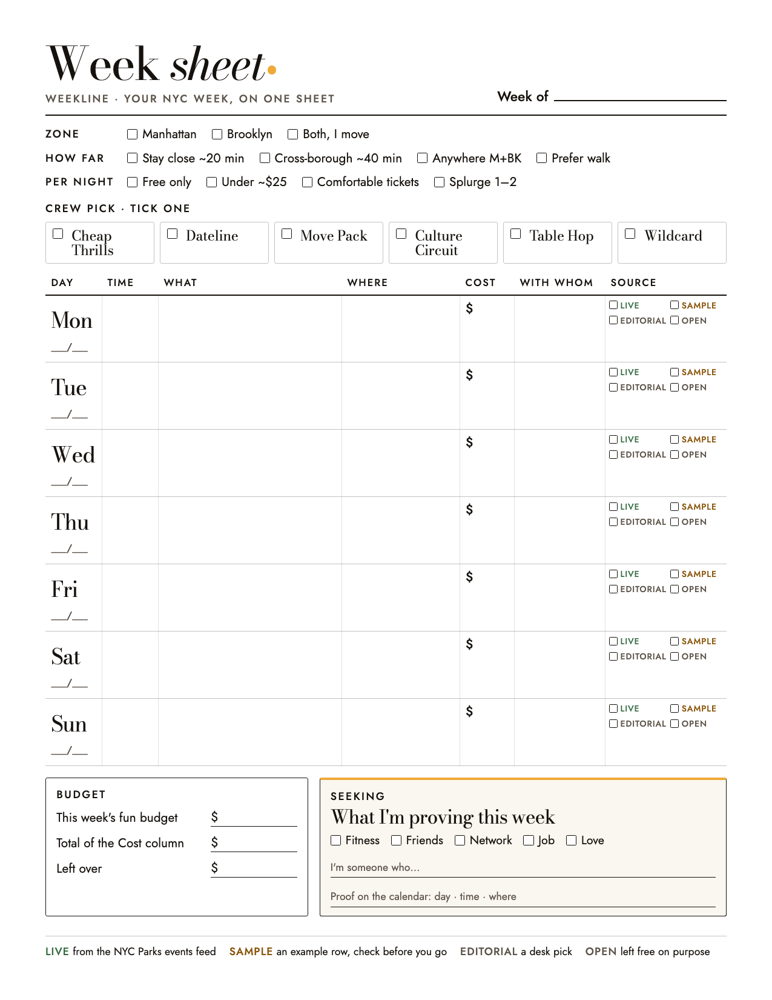
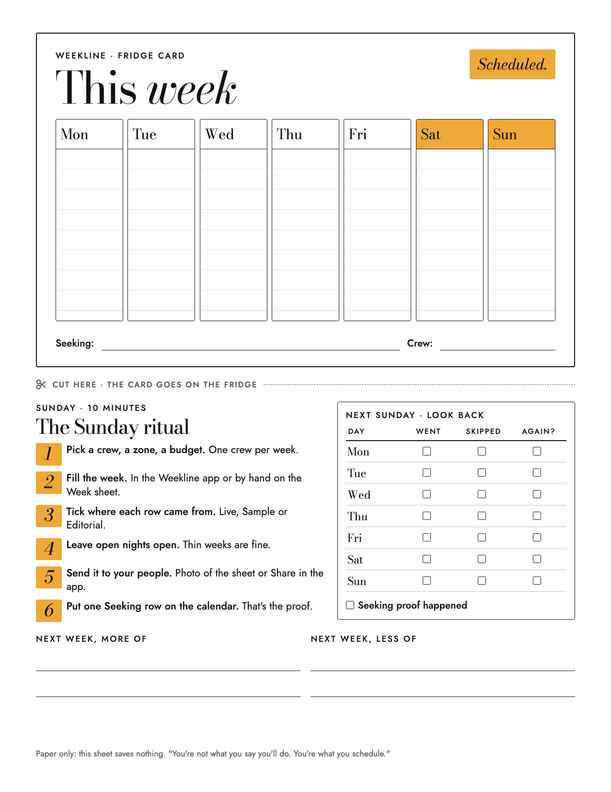

The week, on paper.
Two US Letter pages for the Sunday ritual: a week sheet to fill in, and a fridge card with ten minutes of steps and a look-back for next Sunday. Paper only: it saves nothing.
Download the PDF (2 pages)



- Print at 100% on US Letter.
- Use it with the Weekline app or on its own.
- Live means the NYC Parks events feed; Sample and Editorial rows need checking before you go.